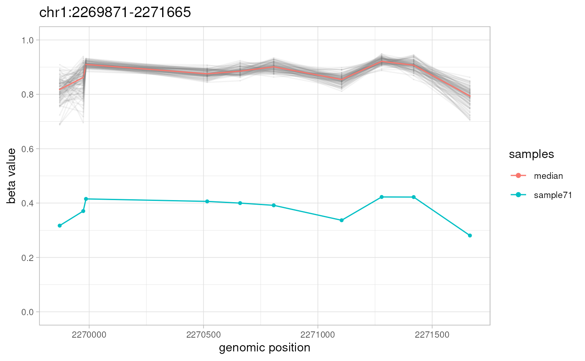
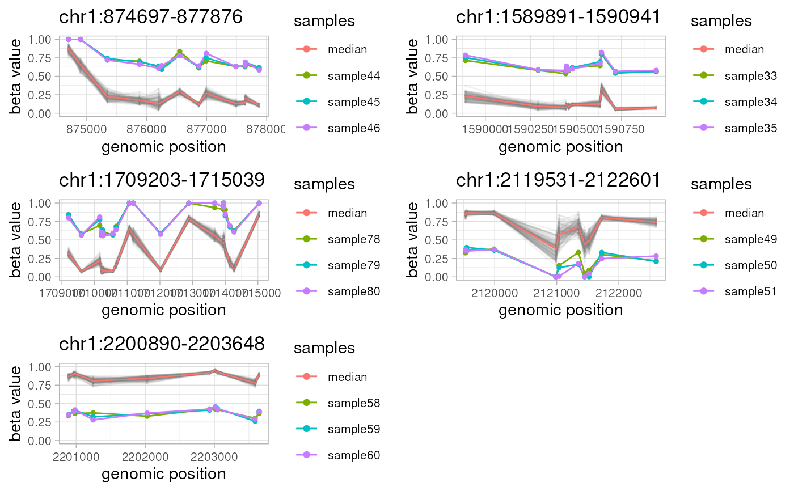

`plotAMR` uses `ggplot2` to visualize aberrantly methylated regions (AMRs) at particular genomic locations.
Arguments
- data.ranges
A `GRanges` object with genomic locations and corresponding beta values included as metadata.
- amr.ranges
An output of `getAMR` - a `GRanges` object that contain aberrantly methylated regions (AMRs).
- data.samples
A character vector with sample names (a subset of metadata column names) to be included in the plot. If `NULL` (the default), then all samples (metadata columns) are included.
- window
An optional integer constant to expand genomic ranges of the `amr.ranges` object (the default: 300).
- ignore.strand
Boolean to ignore strand of AMR region. Default: FALSE.
- highlight
An optional list of samples to highlight. If NULL (the default), will contain sample IDs from the `sample` metadata column of `amr.ranges` object.
- title
An optional title for the plot. If NULL (the default), plot title is set to a genomic location of particular AMR.
- labs
Optional axis labels for the plot. Default: c("genomic position", "beta value").
- transform
Optional transformation of y-axis. Default: "identity" (no transformation).
- limits
Optional limits of y-axis. When default (NULL), limits are c(NA,1) for `transform=="log10"` and c(0,1) otherwise.
- breaks
Optional breaks of y-axis. When default (NULL), breaks are `10**(seq(from=-5, to=0, length.out=6))` for `transform=="log10"` and `seq(from=0, to=1, length.out=6)` otherwise.
- verbose
Boolean to report progress and timings (default: TRUE).
Details
For every non-overlapping genomic location from `amr.ranges` object, `plotAMR` plots and outputs a line graph of methylation beta values taken from `data.ranges` for all samples from `data.samples`. Samples bearing significantly different methylation profiles ('sample' column of `amr.ranges` object) are highlighted.
See also
getAMR for identification of AMRs,
getUniverse for info on enrichment analysis,
simulateAMR and simulateData for the generation
of simulated test data sets, and `ramr` vignettes for the description of
usage and sample data.
Examples
data(ramr)
plotAMR(data.ranges=ramr.data, amr.ranges=ramr.tp.unique[1])
#> Plotting 1 genomic ranges
#> 100%
#> [0.165s]
#> $`chr1:2269871-2271665`

#>
library(gridExtra)
do.call("grid.arrange",
c(plotAMR(data.ranges=ramr.data, amr.ranges=ramr.tp.nonunique), ncol=2))
#> Plotting 5 genomic ranges
#> 20% 40% 60% 80%100%
#> [0.340s]
